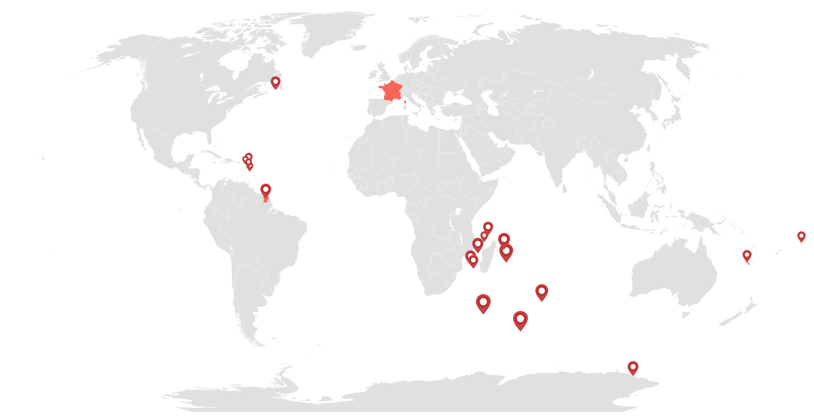

class: cover background-image: url(images/clock-time-stand-by-38267.jpeg) background-size: cover # Manipulating Time in Elm --- # Who am I? ### Vincent Billey ### Developer [@Synbioz](https://twitter.com/synbioz)  ### @Fenntasy on [Twitter](https://twitter.com/Fenntasy) and [Github](https://github.com/Fenntasy) --- class: cover background-image: url(images/plank-time.jpg) background-size: contain background-position: center --- class: cover background-image: url(images/time-is-complex.jpg) background-size: cover --- class: cover background-image: url(images/calendar.jpg) background-size: cover # Dates --- ## When is today? -- ```elm type alias Model = { date : Maybe Date.Date } ``` --- ## When is today? ```elm type alias Model = { date : Maybe Date.Date } init = ( { date = Nothing } , Date.now |> Task.perform SetToday ) ``` --- ## When is today? ```elm type alias Model = { date : Maybe Date.Date } init = ( { date = Nothing } , Date.now |> Task.perform SetToday ) type Msg = SetToday Date.Date ``` --- ## When is today? ```elm type alias Model = { date : Maybe Date.Date } init = ( { date = Nothing } , Date.now |> Task.perform SetToday ) type Msg = SetToday Date.Date update msg model = case msg of SetToday date -> ( { model | date = Just date }, Cmd.none ) ``` [See on Ellie](https://ellie-app.com/3nZ2YRLBdfGa1/0) --- class: center ## rluiten/elm-date-extra -- ```elm today = Date.Extra.Create.dateFromFields 2017 Date.Jun 9 9 0 0 0 ``` -- ```elm usFormatedDate : Date.Date -> String usFormatedDate = let config = Date.Extra.Config.Config_en_us.config in Date.Extra.Format.format config config.format.longDate ``` -- `Friday, June 09, 2017` [See on Ellie](https://ellie-app.com/3nVNnVDv8m7a1/0) --- class: center ## rluiten/elm-date-extra -- ### create -- ### compare -- ### calculate durations -- ### translate --- class: center, middle > Please be warned that there are many ways to manipulate dates that produce basically incorrect results. --- class: cover background-image: url(images/clocks.jpg) background-size: cover # Timezones --- class: cover background-image: url(images/australia.png) background-size: contain background-position: center --- class: cover background-image: url(images/australia2.png) background-size: contain background-position: center --- class: cover background-image: url(images/australia3.png) background-size: contain background-position: center --- class: cover background-image: url(images/australia4.png) background-size: contain background-position: center --- `elm-community/elm-time` -- ### Pure Elm dates and time with Records -- ### No translation though -- ### Heavier package --- ##Â Timezone ~~~elm import Html exposing (text) import Time.TimeZones exposing (australia_eucla) import Time.ZonedDateTime exposing (zonedDateTime, zero, toISO8601) displayTime : Time.Time -> String main : Html.Html msg main = let timezone = australia_eucla () date = zonedDateTime timezone { zero | year = 2017 , month = 2 , day = 23 , hour = 16 } in text (toTimestamp date |> displayTime) -- 2017 Feb 23 8:15 ~~~ [See on Ellie](https://ellie-app.com/3pq4GzDpFh4a1/0) --- class: cover white <img src="images/world.svg" class="zoom-france" /> --- class: cover white  --- # Takeaways -- ## Don't ignore time zones when building apps -- ## Don't trap yourself with built-in Dates -- ## Think about what you want to do -- ## []()